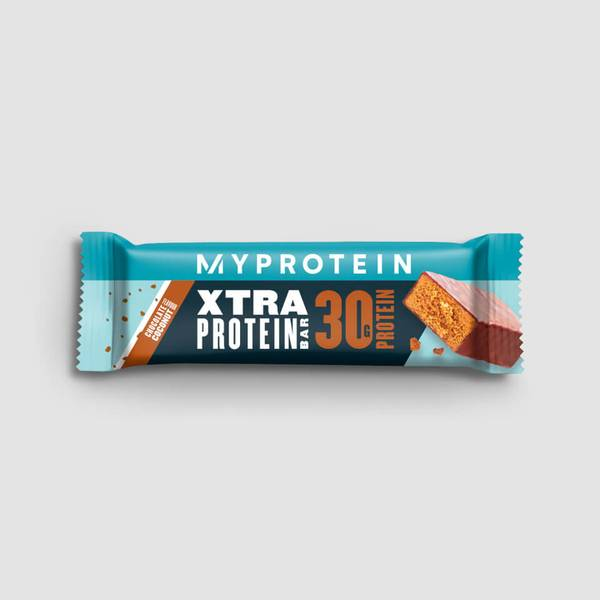
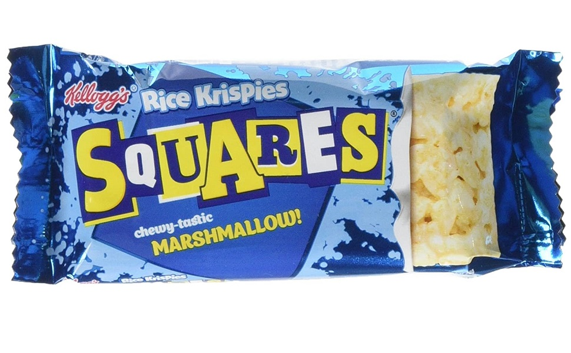
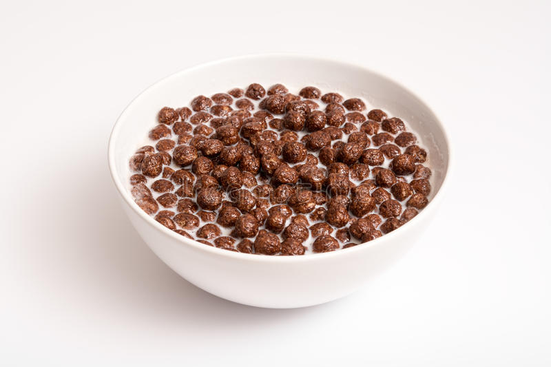

These snacks are little bits and bobs that have throughout the day between meals in order to increase calories as well as keep my energy levels high all day long.
Here is an example of the snacks that i will have throughout the day.
Nutritional Information
Protien Bar:
Calories: 259
Protein: 30g
Fat: 5.9g
Carbs: 24g
Incorporating a high-protein protein bar into your diet can be a good way to add extra protein to support muscle growth and recovery. Protein bars are convenient and portable, making them a great option for on-the-go snacking or post-workout recovery. Look for bars that contain at least 20 grams of protein per serving and are low in added sugars and unhealthy fats. Additionally, choose bars that are made with high-quality protein sources like whey, casein, or soy to maximize the benefits for your bodybuilding goals. However, be mindful that protein bars should not replace whole, nutrient-dense foods in your diet, as they may lack essential vitamins, minerals, and fiber.

Nutritional Information
Squares:
Calories: 119
Protein: 0.8g
Fat: 3.4g
Carbs: 21g
I will usually have this as my intra-workout snack. easy to take to the gym and it is purely fast digesting simple carbs which is exactly what you want halfway through a workout to keep the energy levels high.

Nutritional Information
Cereal:
Calories: 814
Protein: 25.9g
Fat: 11g
Carbs: 147.3g
Having a bowl of cereal with milk can be a good snack option before bed or after a workout. Cereal is typically high in carbohydrates, providing a quick source of energy to fuel your workouts or help replenish glycogen stores after exercise. Additionally, adding milk to your cereal can provide a source of protein and calcium, which are essential for muscle growth and repair.
